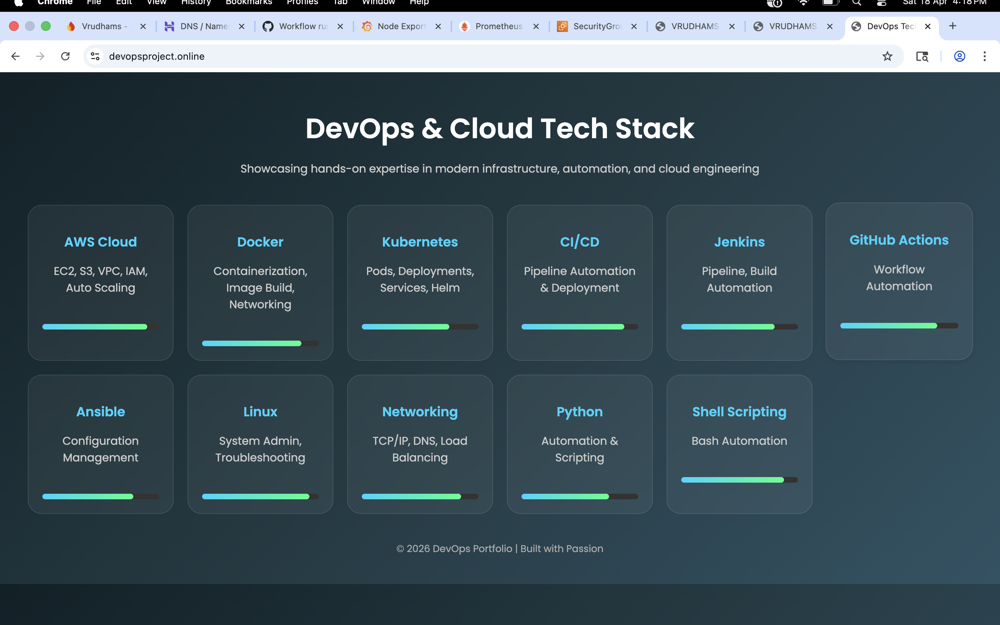
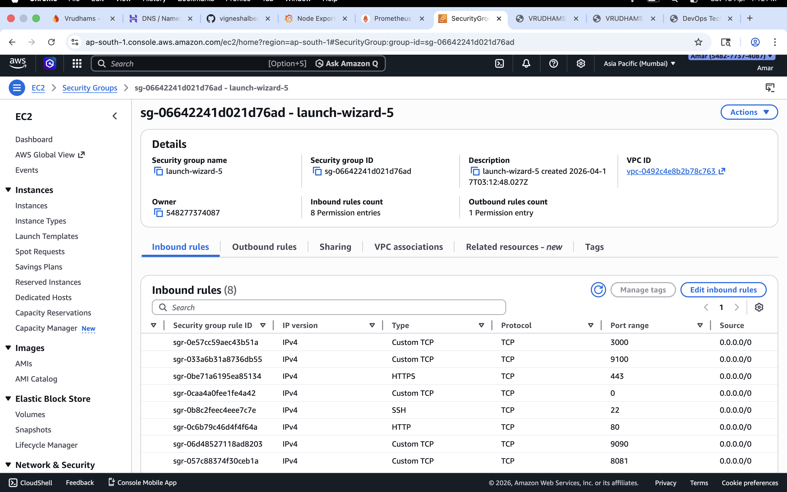

📌 Project Overview
This project demonstrates a complete end-to-end DevOps pipeline including CI/CD automation, containerization using Docker, deployment on AWS EC2, reverse proxy configuration using Nginx, and real-time monitoring using Prometheus and Grafana.
⚙️ Tech Stack
AWS EC2 Docker Nginx GitHub Actions Jenkins Linux Prometheus Grafana🏗️ Architecture Flow
GitHub Repository
↓
CI/CD Pipeline (GitHub Actions / Jenkins)
↓
AWS EC2 Instance
↓
Docker Container
↓
Nginx Reverse Proxy
↓
Live Application (Domain + HTTPS)
Monitoring:
Node Exporter → Prometheus → Grafana
📸 Screenshots
Grafana Dashboard

Prometheus Targets

Nginx Deployment

AWS EC2 Setup

🧠 Key Learnings
- End-to-end CI/CD pipeline implementation
- Docker-based application deployment
- Reverse proxy configuration using Nginx
- Cloud deployment on AWS EC2
- Monitoring setup using Prometheus & Grafana